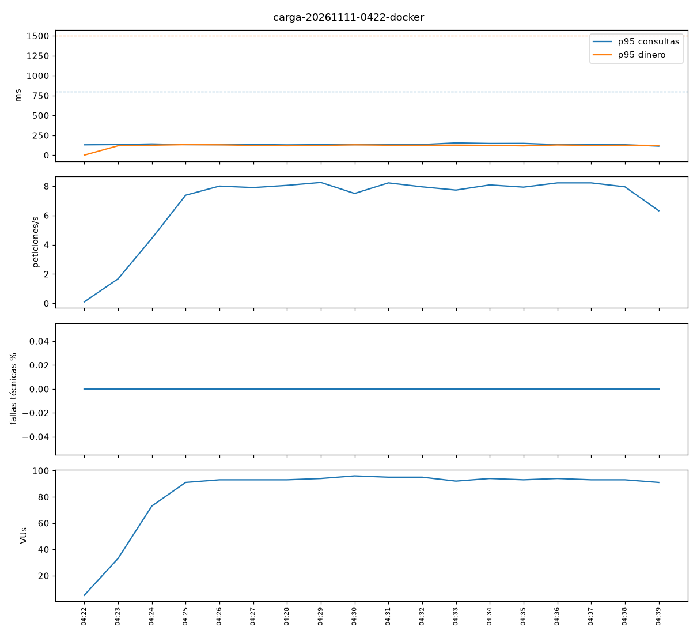
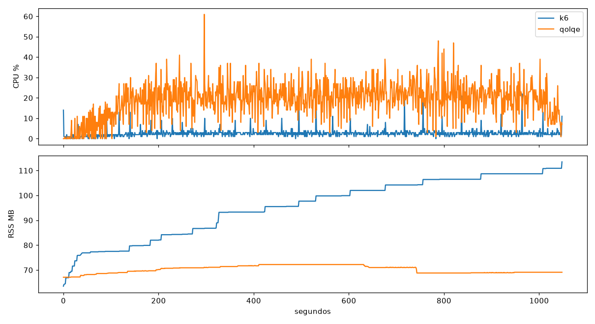

Carga (hora punta) · 11/11/2026 04:22
Docker en Windows (Qolqe a 1 CPU / 1 GB) · carpeta carga-20261111-0422-docker
Modelo de carga anterior (por operación, sin flujos). Se conserva porque docs/comparativa-rendimiento.md cita su CPU de k6 (2,6 %).
✓ Todos los umbrales cumplidosPeticiones HTTP
7 434
7,1 por segundo en promedio
Fallas HTTP
0
0,00 % de las peticiones
Iteraciones (sesiones)
733
0,70 por segundo
Usuarios virtuales máx.
100
Duración
17 min
1051 s
CPU de Qolqe
19 %
máx. 61 % · memoria máx. 72 MB
CPU del generador (k6)
2,6 %
máx. 22 %
Integridad de los datos
INTEGRIDAD OK
Operaciones de dinero confirmadas a k6: 1353; filas nuevas: 1353
Umbrales (criterios de aceptación)
| Métrica | Condición | Medido | Resultado |
|---|---|---|---|
dropped_iterations | count<1 | 0 | ✓ cumplido |
http_req_duration{tipo:consulta} | p(95)<800 | 133,3 ms | ✓ cumplido |
http_req_duration{tipo:dinero} | p(95)<1500 | 125,1 ms | ✓ cumplido |
errores_negocio | count<1 | 0 | ✓ cumplido |
http_req_failed | rate<0.01 | 0,00 % | ✓ cumplido |
iteration_duration | p(95)<130000 | 121,59 s | ✓ cumplido |
Latencia
| Medida | Promedio | Mediana | p90 | p95 | p99 | Máx. |
|---|---|---|---|---|---|---|
| Todas las peticiones | 34,6 ms | 11,0 ms | 116,8 ms | 132,0 ms | 160,8 ms | 380,0 ms |
| Consultas (tipo consulta) | 30,3 ms | 10,1 ms | 116,1 ms | 133,3 ms | 163,7 ms | 380,0 ms |
| Operaciones de dinero (tipo dinero) | 53,9 ms | 54,4 ms | 117,4 ms | 125,1 ms | 136,3 ms | 166,5 ms |
| Sesión completa (iteración) | 108,51 s | 108,55 s | 118,65 s | 121,59 s | 126,14 s | 131,54 s |
El dashboard de k6 solo muestra la fila «Todas las peticiones»; el corte por tipo sale de las etiquetas que pone qolqe.js.
Por endpoint
| Endpoint | Peticiones | p95 | Máx. |
|---|---|---|---|
GET /api/cuentas/me/saldo | 1 379 | 13 ms | 38 ms |
GET /api/cuentas/me | 1 379 | 12 ms | 50 ms |
GET /api/contactos | 890 | 16 ms | 31 ms |
POST /api/auth/login | 799 | 171 ms | 260 ms |
POST /api/transferencias | 706 | 129 ms | 167 ms |
GET /api/movimientos | 689 | 86 ms | 380 ms |
GET /api/servicios/deudas | 484 | 17 ms | 38 ms |
POST /api/recargas | 454 | 28 ms | 69 ms |
POST /api/servicios/pagos | 193 | 22 ms | 50 ms |
GET /api/seguridad/dispositivos | 101 | 14 ms | 22 ms |
GET /api/seguridad/sesiones | 96 | 15 ms | 33 ms |
GET /api/limites | 89 | 14 ms | 26 ms |
GET /api/solicitudes | 89 | 13 ms | 21 ms |
GET /api/limites/alertas | 86 | 15 ms | 21 ms |
Por minuto
18 minutos (usuarios, peticiones por segundo, p95 en ms, % de fallas)
| Minuto | Usuarios | Req/s | p95 consulta | p95 dinero | Fallas % |
|---|---|---|---|---|---|
| 04:22 | 5 | 0.1 | 130 | 0 | 0.0 |
| 04:23 | 33 | 1.67 | 133 | 118 | 0.0 |
| 04:24 | 73 | 4.43 | 141 | 125 | 0.0 |
| 04:25 | 91 | 7.38 | 132 | 132 | 0.0 |
| 04:26 | 93 | 8.0 | 131 | 130 | 0.0 |
| 04:27 | 93 | 7.9 | 134 | 122 | 0.0 |
| 04:28 | 93 | 8.05 | 129 | 118 | 0.0 |
| 04:29 | 94 | 8.25 | 132 | 122 | 0.0 |
| 04:30 | 96 | 7.5 | 131 | 130 | 0.0 |
| 04:31 | 95 | 8.22 | 133 | 125 | 0.0 |
| 04:32 | 95 | 7.95 | 134 | 125 | 0.0 |
| 04:33 | 92 | 7.73 | 154 | 126 | 0.0 |
| 04:34 | 94 | 8.08 | 147 | 123 | 0.0 |
| 04:35 | 93 | 7.93 | 148 | 117 | 0.0 |
| 04:36 | 94 | 8.22 | 133 | 128 | 0.0 |
| 04:37 | 93 | 8.22 | 131 | 123 | 0.0 |
| 04:38 | 93 | 7.95 | 131 | 125 | 0.0 |
| 04:39 | 91 | 6.32 | 113 | 123 | 0.0 |
Gráficos


Archivos de la corrida
dashboard.html · k6.txt · summary.json · por-minuto.csv · por-endpoint.csv · integridad.txt
Datos de k6 (summary.json, k6.json.gz), de monitor.py (recursos) y de la verificación de integridad. Generado por resumen.py.